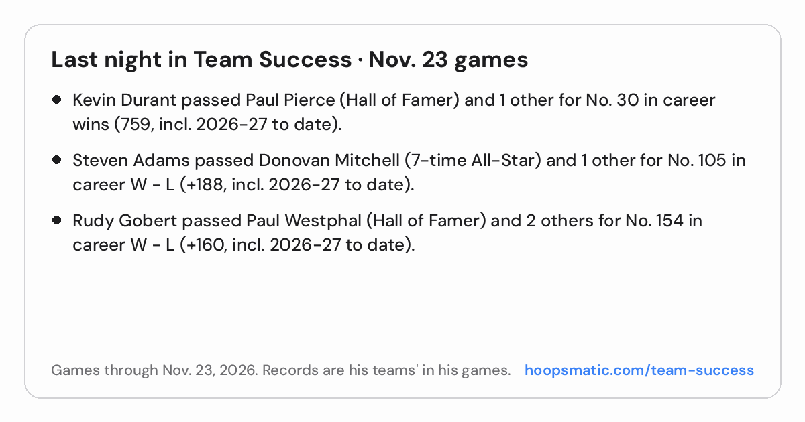

Last night in Team Success · Nov. 23 games
Nov. 24, 2026
 Kevin Durant passed Paul Pierce (Hall of Famer) and 1 other for No. 30 in career wins (759, incl. 2026-27 to date).
Kevin Durant passed Paul Pierce (Hall of Famer) and 1 other for No. 30 in career wins (759, incl. 2026-27 to date). Steven Adams passed Donovan Mitchell (7-time All-Star) and 1 other for No. 105 in career W − L (+188, incl. 2026-27 to date).
Steven Adams passed Donovan Mitchell (7-time All-Star) and 1 other for No. 105 in career W − L (+188, incl. 2026-27 to date). Rudy Gobert passed Paul Westphal (Hall of Famer) and 2 others for No. 154 in career W − L (+160, incl. 2026-27 to date).
Rudy Gobert passed Paul Westphal (Hall of Famer) and 2 others for No. 154 in career W − L (+160, incl. 2026-27 to date). Marcus Smart passed Joe Dumars (Hall of Famer) and 4 others for No. 155 in career W − L (+159, incl. 2026-27 to date).
Marcus Smart passed Joe Dumars (Hall of Famer) and 4 others for No. 155 in career W − L (+159, incl. 2026-27 to date). The Sacramento Kings are 2–15, the franchise's worst start through 17 games in 79 seasons (2026-27 to date).
The Sacramento Kings are 2–15, the franchise's worst start through 17 games in 79 seasons (2026-27 to date). The Milwaukee Bucks are 2–16, the franchise's worst start through 18 games in 59 seasons (2026-27 to date).
The Milwaukee Bucks are 2–16, the franchise's worst start through 18 games in 59 seasons (2026-27 to date). The Utah Jazz are 3–16, the franchise's worst start through 19 games since 1979-80 (2–17).
The Utah Jazz are 3–16, the franchise's worst start through 19 games since 1979-80 (2–17). The Minnesota Timberwolves are 3–5 without Cody Williams and 10–0 with him (2026-27 to date, 10 played, 8 missed).
The Minnesota Timberwolves are 3–5 without Cody Williams and 10–0 with him (2026-27 to date, 10 played, 8 missed). The Houston Rockets are 4–4 without Jae'Sean Tate and 9–1 with him (2026-27 to date, 10 played, 8 missed).
The Houston Rockets are 4–4 without Jae'Sean Tate and 9–1 with him (2026-27 to date, 10 played, 8 missed). Tonight vs the Washington Wizards: Derrick White's teams are 17–1 (94.4%) in his 18 regular-season games against them (incl. 2026-27 to date).
Tonight vs the Washington Wizards: Derrick White's teams are 17–1 (94.4%) in his 18 regular-season games against them (incl. 2026-27 to date).
Nov. 24, 2026 · 10 games on Nov. 23, 2026 · each item is a template filled from the data and links to the row or games that prove it · earlier lists · the rules
